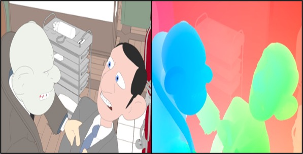
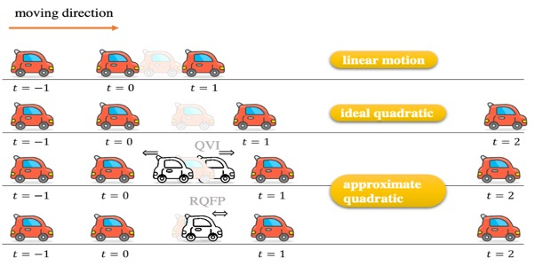
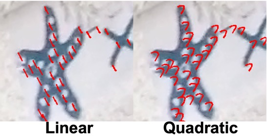

Google Scholar Github Twitter Youtube
|
|
Siyao is currently a second-year PhD student in MMLab of Nanyang Technological University, Singapore, advised by Chen Change Loy.
Before that, he was a full-time researcher in SenseTime Research, working closely with Quan Wang, Wenxiu Sun and Chao Dong.
His current interests include AI techniques for content creation. Google Scholar Github Twitter Youtube |
||
|  |
AnimeRun: 2D Animation Visual Correspondence from Open Source 3D Movies
Li Siyao, Yuhang Li, Bo Li, Chao Dong, Ziwei Liu, Chen Change Loy NeurIPS 2022 (Dataset & Benchmark Track) Project page | |
 |
Bailando: 3D Dance Generation by Actor-Critic GPT with Choreographic Memory
Li Siyao, Weijiang Yu, Tianpei Gu, Chunze Lin, Quan Wang, Chen Qian, Chen Change Loy, Ziwei Liu CVPR 2022 (Oral, ~4%) |
 |
Deep Animation Video Interpolation in the Wild Li Siyao*, Shiyu Zhao*, Weijiang Yu, Wenxiu Sun, Dimitris Metaxas, Chen Change Loy, Ziwei Liu CVPR 2021 |
|  |
Enhanced Quadratic Video Interpolation Yihao Liu*, Liangbin Xie*, Li Siyao, Wenxiu Sun, Yu Qiao, Chao Dong ECCV 2020, AIM Workshop 1st place of AIM-VTSR 2020 challenge! |
|  |
Quadratic Video Interpolation Xiangyu Xu*, Li Siyao*, Wenxiu Sun, Qian Yin, Ming-Hsuan Yang NeurIPS 2019 (Spotlight, ~15%) 1st place of ICCV AIM-VTSR 2019 challenge! |